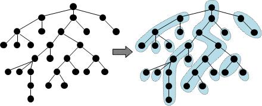
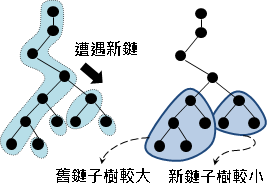

Tree資料結構
程度★★ 難度★
Heavy-Light Decomposition
想查詢一棵樹上任意一條路徑的權重，直覺就得到一個O(V)方法，最差情況出現在這棵樹是一條長鏈。
長鏈有很棒的資料結構。只要找出樹上所有長鏈，每條長鏈套用偽線段樹、BIT、Sparse Table、BST、Heap，就能降低時間複雜度。
找長鏈怎麼找呢？先用一次Graph Traversal算出每棵子樹有多少節點。然後，樹上每個節點各自連向最大的子樹。最後，自然形成了鏈，樹上每個節點都隸屬於某條鏈。
這種分割一棵樹成為數條鏈的手法，稱做「重輕分解」。中文網路上意譯為「樹鏈剖分」。
時間複雜度
樹鏈剖分為O(V)，建立長鏈們的資料結構為O(VlogV)，查詢LCA為O(logV)，查詢一條路徑為O((logV)^2)。
一棵樹最多V條鏈，一條鏈最多V個點──但是一條路徑最多遇到O(logV)條鏈，一條鏈進行區間查詢只需O(logV)時間。
由根往葉走，一旦遭遇新鏈，新鏈子樹小於等於原鏈子樹，剩下的節點數量不到一半。因此最多遇到O(logV)條鏈。
Timus 1553 SPOJ 375
Forest資料結構（Under Construction!）
程度★★ 難度★★★
Link-Cut Tree
http://compgeom.cs.uiuc.edu/~jeffe/teaching/datastructures/2006/notes/07-linkcut.pdf http://courses.csail.mit.edu/6.851/spring07/scribe/lec04.pdf http://wenku.baidu.com/view/75906f160b4e767f5acfcedb.html
一、靜態樹：甲、一棵無向樹。
乙、更新一個點(邊)的數值。
丙、查詢一條路徑的最大值、最小值、總和、相異數字數量、......。
二、動態樹：丁、一棵樹，砍斷一條邊，變成兩棵樹。
戊、兩棵樹，增加一條邊，接成一棵樹。
動態樹部分，由於長鏈可能會被切斷的，所以「樹鏈剖分」就沒搞頭了。
就只能老老實實的用Link-Cut Tree了。
UVa 11994
Euler Tour Tree
【待補文字】